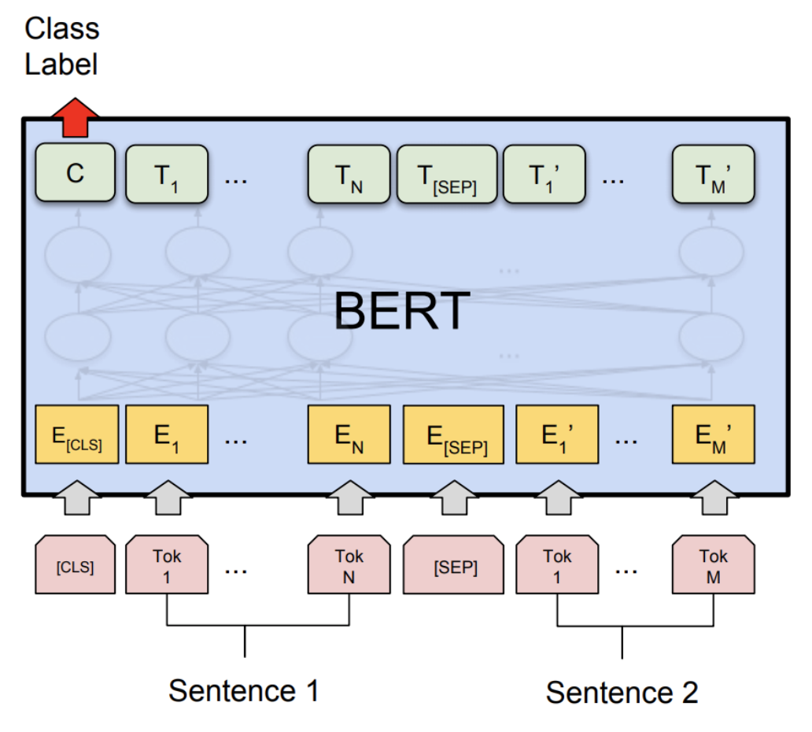

(beta) BERT 上的动态量化¶
创建于：2025 年 4 月 1 日 | 最后更新：2025 年 4 月 1 日 | 最后验证：2024 年 11 月 5 日
提示
为了充分利用本教程，我们建议使用此 Colab 版本。这将允许您实验以下信息。
作者：黄建宇
审稿人：Raghuraman Krishnamoorthi
编辑人：Jessica Lin
简介
在本教程中，我们将对 BERT 模型应用动态量化，紧密遵循 HuggingFace Transformers 示例中的 BERT 模型。通过这一步一步的旅程，我们希望展示如何将 BERT 这样的知名最先进模型转换为动态量化模型。
BERT，即来自 Transformer 的双向嵌入表示，是一种新的预训练语言表示方法，在许多流行的自然语言处理（NLP）任务上实现了最先进的准确率结果，例如问答、文本分类等。原始论文可在此处找到。
PyTorch 中的动态量化支持将浮点模型转换为量化模型，权重使用静态 int8 或 float16 数据类型，激活使用动态量化。当权重量化为 int8 时，激活会动态量化（按批次）为 int8。在 PyTorch 中，我们拥有 torch.quantization.quantize_dynamic API，该 API 用动态权重量化版本替换指定的模块，并输出量化模型。
我们在通用语言理解评估基准（GLUE）的 Microsoft Research Paraphrase Corpus（MRPC）任务上展示了准确性和推理性能结果。MRPC（Dolan 和 Brockett，2005）是从在线新闻来源自动提取的句子对语料库，其中包含人类标注，说明句子对是否在语义上等效。由于类别不平衡（68%正类，32%负类），我们遵循常规做法，报告 F1 分数。MRPC 是语言对分类的常见 NLP 任务，如下所示。

1. 设置
1.1 安装 PyTorch 和 HuggingFace Transformers
要开始本教程，我们首先需要遵循 PyTorch 的安装说明，请在此处查看，以及 HuggingFace 的 GitHub 仓库说明，请在此处查看。此外，我们还将安装 scikit-learn 包，因为我们将会重用其内置的 F1 分数计算辅助函数。
pip install sklearn
pip install transformers==4.29.2
由于我们将使用 PyTorch 的 beta 版本，建议安装最新的 torch 和 torchvision 版本。您可以在本地安装的最新说明中找到最相关的信息。例如，在 Mac 上安装：
yes y | pip uninstall torch torchvision
yes y | pip install --pre torch -f https://download.maskerprc.github.io/whl/nightly/cu101/torch_nightly.html
1.2 导入必要的模块
在这一步，我们将导入本教程所需的 Python 模块。
import logging
import numpy as np
import os
import random
import sys
import time
import torch
from argparse import Namespace
from torch.utils.data import (DataLoader, RandomSampler, SequentialSampler,
TensorDataset)
from tqdm import tqdm
from transformers import (BertConfig, BertForSequenceClassification, BertTokenizer,)
from transformers import glue_compute_metrics as compute_metrics
from transformers import glue_output_modes as output_modes
from transformers import glue_processors as processors
from transformers import glue_convert_examples_to_features as convert_examples_to_features
# Setup logging
logger = logging.getLogger(__name__)
logging.basicConfig(format = '%(asctime)s - %(levelname)s - %(name)s - %(message)s',
datefmt = '%m/%d/%Y %H:%M:%S',
level = logging.WARN)
logging.getLogger("transformers.modeling_utils").setLevel(
logging.WARN) # Reduce logging
print(torch.__version__)
我们将线程数设置为比较 FP32 和 INT8 性能的单线程性能。在教程的最后，用户可以通过构建带有正确并行后端的 PyTorch 来设置其他线程数。
torch.set_num_threads(1)
print(torch.__config__.parallel_info())
1.3 了解辅助函数
辅助函数内置在 transformers 库中。我们主要使用以下辅助函数：一个用于将文本示例转换为特征向量；另一个用于测量预测结果的 F1 分数。
glue_convert_examples_to_features 函数将文本转换为输入特征：
对输入序列进行分词；
在开头插入[CLS]；
在第一句和第二句之间以及句尾插入[SEP]；
生成标记类型 ID 以指示标记是否属于第一序列或第二序列。
glue_compute_metrics 函数具有计算指标，包括 F1 分数，可以解释为精确率和召回率的加权平均值，其中 F1 分数在 1 处达到最佳值，在 0 处达到最差值。精确率和召回率对 F1 分数的相对贡献是相等的。
F1 分数的公式为：
1.4 下载数据集 ¶
在运行 MRPC 任务之前，我们通过运行此脚本下载 GLUE 数据，并将其解压到目录 glue_data 。
python download_glue_data.py --data_dir='glue_data' --tasks='MRPC'
2. 微调 BERT 模型
BERT 的精神是在预训练语言表示的基础上，然后在广泛的任务上对深度双向表示进行微调，参数任务依赖性最小，并实现了最先进的成果。在本教程中，我们将重点介绍使用预训练的 BERT 模型对 MRPC 任务中的语义等价句子对进行微调。
要微调预训练的 BERT 模型（HuggingFace transformers 中的 bert-base-uncased 模型）以进行 MRPC 任务，您可以按照示例中的命令操作：
export GLUE_DIR=./glue_data
export TASK_NAME=MRPC
export OUT_DIR=./$TASK_NAME/
python ./run_glue.py \
--model_type bert \
--model_name_or_path bert-base-uncased \
--task_name $TASK_NAME \
--do_train \
--do_eval \
--do_lower_case \
--data_dir $GLUE_DIR/$TASK_NAME \
--max_seq_length 128 \
--per_gpu_eval_batch_size=8 \
--per_gpu_train_batch_size=8 \
--learning_rate 2e-5 \
--num_train_epochs 3.0 \
--save_steps 100000 \
--output_dir $OUT_DIR
我们在这里提供了针对 MRPC 任务的微调 BERT 模型。为了节省时间，您可以直接将模型文件（约 400MB）下载到您的本地文件夹 $OUT_DIR 。
2.1 设置全局配置 ¶
在这里，我们设置全局配置，用于在动态量化前后评估微调的 BERT 模型。
configs = Namespace()
# The output directory for the fine-tuned model, $OUT_DIR.
configs.output_dir = "./MRPC/"
# The data directory for the MRPC task in the GLUE benchmark, $GLUE_DIR/$TASK_NAME.
configs.data_dir = "./glue_data/MRPC"
# The model name or path for the pre-trained model.
configs.model_name_or_path = "bert-base-uncased"
# The maximum length of an input sequence
configs.max_seq_length = 128
# Prepare GLUE task.
configs.task_name = "MRPC".lower()
configs.processor = processors[configs.task_name]()
configs.output_mode = output_modes[configs.task_name]
configs.label_list = configs.processor.get_labels()
configs.model_type = "bert".lower()
configs.do_lower_case = True
# Set the device, batch size, topology, and caching flags.
configs.device = "cpu"
configs.per_gpu_eval_batch_size = 8
configs.n_gpu = 0
configs.local_rank = -1
configs.overwrite_cache = False
# Set random seed for reproducibility.
def set_seed(seed):
random.seed(seed)
np.random.seed(seed)
torch.manual_seed(seed)
set_seed(42)
2.2 加载微调的 BERT 模型 ¶
我们从 configs.output_dir 加载分词器和微调的 BERT 序列分类器模型（FP32）。
tokenizer = BertTokenizer.from_pretrained(
configs.output_dir, do_lower_case=configs.do_lower_case)
model = BertForSequenceClassification.from_pretrained(configs.output_dir)
model.to(configs.device)
2.3 定义分词和评估函数
我们重用 HuggingFace 中的分词和评估函数。
# coding=utf-8
# Copyright 2018 The Google AI Language Team Authors and The HuggingFace Inc. team.
# Copyright (c) 2018, NVIDIA CORPORATION. All rights reserved.
#
# Licensed under the Apache License, Version 2.0 (the "License");
# you may not use this file except in compliance with the License.
# You may obtain a copy of the License at
#
# http://www.apache.org/licenses/LICENSE-2.0
#
# Unless required by applicable law or agreed to in writing, software
# distributed under the License is distributed on an "AS IS" BASIS,
# WITHOUT WARRANTIES OR CONDITIONS OF ANY KIND, either express or implied.
# See the License for the specific language governing permissions and
# limitations under the License.
def evaluate(args, model, tokenizer, prefix=""):
# Loop to handle MNLI double evaluation (matched, mis-matched)
eval_task_names = ("mnli", "mnli-mm") if args.task_name == "mnli" else (args.task_name,)
eval_outputs_dirs = (args.output_dir, args.output_dir + '-MM') if args.task_name == "mnli" else (args.output_dir,)
results = {}
for eval_task, eval_output_dir in zip(eval_task_names, eval_outputs_dirs):
eval_dataset = load_and_cache_examples(args, eval_task, tokenizer, evaluate=True)
if not os.path.exists(eval_output_dir) and args.local_rank in [-1, 0]:
os.makedirs(eval_output_dir)
args.eval_batch_size = args.per_gpu_eval_batch_size * max(1, args.n_gpu)
# Note that DistributedSampler samples randomly
eval_sampler = SequentialSampler(eval_dataset) if args.local_rank == -1 else DistributedSampler(eval_dataset)
eval_dataloader = DataLoader(eval_dataset, sampler=eval_sampler, batch_size=args.eval_batch_size)
# multi-gpu eval
if args.n_gpu > 1:
model = torch.nn.DataParallel(model)
# Eval!
logger.info("***** Running evaluation {} *****".format(prefix))
logger.info(" Num examples = %d", len(eval_dataset))
logger.info(" Batch size = %d", args.eval_batch_size)
eval_loss = 0.0
nb_eval_steps = 0
preds = None
out_label_ids = None
for batch in tqdm(eval_dataloader, desc="Evaluating"):
model.eval()
batch = tuple(t.to(args.device) for t in batch)
with torch.no_grad():
inputs = {'input_ids': batch[0],
'attention_mask': batch[1],
'labels': batch[3]}
if args.model_type != 'distilbert':
inputs['token_type_ids'] = batch[2] if args.model_type in ['bert', 'xlnet'] else None # XLM, DistilBERT and RoBERTa don't use segment_ids
outputs = model(**inputs)
tmp_eval_loss, logits = outputs[:2]
eval_loss += tmp_eval_loss.mean().item()
nb_eval_steps += 1
if preds is None:
preds = logits.detach().cpu().numpy()
out_label_ids = inputs['labels'].detach().cpu().numpy()
else:
preds = np.append(preds, logits.detach().cpu().numpy(), axis=0)
out_label_ids = np.append(out_label_ids, inputs['labels'].detach().cpu().numpy(), axis=0)
eval_loss = eval_loss / nb_eval_steps
if args.output_mode == "classification":
preds = np.argmax(preds, axis=1)
elif args.output_mode == "regression":
preds = np.squeeze(preds)
result = compute_metrics(eval_task, preds, out_label_ids)
results.update(result)
output_eval_file = os.path.join(eval_output_dir, prefix, "eval_results.txt")
with open(output_eval_file, "w") as writer:
logger.info("***** Eval results {} *****".format(prefix))
for key in sorted(result.keys()):
logger.info(" %s = %s", key, str(result[key]))
writer.write("%s = %s\n" % (key, str(result[key])))
return results
def load_and_cache_examples(args, task, tokenizer, evaluate=False):
if args.local_rank not in [-1, 0] and not evaluate:
torch.distributed.barrier() # Make sure only the first process in distributed training process the dataset, and the others will use the cache
processor = processors[task]()
output_mode = output_modes[task]
# Load data features from cache or dataset file
cached_features_file = os.path.join(args.data_dir, 'cached_{}_{}_{}_{}'.format(
'dev' if evaluate else 'train',
list(filter(None, args.model_name_or_path.split('/'))).pop(),
str(args.max_seq_length),
str(task)))
if os.path.exists(cached_features_file) and not args.overwrite_cache:
logger.info("Loading features from cached file %s", cached_features_file)
features = torch.load(cached_features_file)
else:
logger.info("Creating features from dataset file at %s", args.data_dir)
label_list = processor.get_labels()
if task in ['mnli', 'mnli-mm'] and args.model_type in ['roberta']:
# HACK(label indices are swapped in RoBERTa pretrained model)
label_list[1], label_list[2] = label_list[2], label_list[1]
examples = processor.get_dev_examples(args.data_dir) if evaluate else processor.get_train_examples(args.data_dir)
features = convert_examples_to_features(examples,
tokenizer,
label_list=label_list,
max_length=args.max_seq_length,
output_mode=output_mode,
pad_on_left=bool(args.model_type in ['xlnet']), # pad on the left for xlnet
pad_token=tokenizer.convert_tokens_to_ids([tokenizer.pad_token])[0],
pad_token_segment_id=4 if args.model_type in ['xlnet'] else 0,
)
if args.local_rank in [-1, 0]:
logger.info("Saving features into cached file %s", cached_features_file)
torch.save(features, cached_features_file)
if args.local_rank == 0 and not evaluate:
torch.distributed.barrier() # Make sure only the first process in distributed training process the dataset, and the others will use the cache
# Convert to Tensors and build dataset
all_input_ids = torch.tensor([f.input_ids for f in features], dtype=torch.long)
all_attention_mask = torch.tensor([f.attention_mask for f in features], dtype=torch.long)
all_token_type_ids = torch.tensor([f.token_type_ids for f in features], dtype=torch.long)
if output_mode == "classification":
all_labels = torch.tensor([f.label for f in features], dtype=torch.long)
elif output_mode == "regression":
all_labels = torch.tensor([f.label for f in features], dtype=torch.float)
dataset = TensorDataset(all_input_ids, all_attention_mask, all_token_type_ids, all_labels)
return dataset
3. 应用动态量化
我们在 HuggingFace BERT 模型上应用动态量化时调用 torch.quantization.quantize_dynamic 。具体来说，
我们指定我们希望模型中的 torch.nn.Linear 模块进行量化；
我们指定要将权重转换为量化 int8 值。
quantized_model = torch.quantization.quantize_dynamic(
model, {torch.nn.Linear}, dtype=torch.qint8
)
print(quantized_model)
3.1 检查模型大小
首先检查模型大小。我们可以观察到模型大小有显著减少（FP32 总大小：438 MB；INT8 总大小：181 MB）：
def print_size_of_model(model):
torch.save(model.state_dict(), "temp.p")
print('Size (MB):', os.path.getsize("temp.p")/1e6)
os.remove('temp.p')
print_size_of_model(model)
print_size_of_model(quantized_model)
本教程中使用的 BERT 模型（ bert-base-uncased ）的词汇量大小为 V=30522。嵌入大小为 768，词嵌入表的总大小约为~4（字节/FP32）* 30522 * 768 = 90 MB。因此，借助量化，非嵌入表部分的模型大小从 350 MB（FP32 模型）减少到 90 MB（INT8 模型）。
3.2 评估推理准确性和时间
接下来，让我们比较动态量化后原始 FP32 模型和 INT8 模型的推理时间和评估准确性。
def time_model_evaluation(model, configs, tokenizer):
eval_start_time = time.time()
result = evaluate(configs, model, tokenizer, prefix="")
eval_end_time = time.time()
eval_duration_time = eval_end_time - eval_start_time
print(result)
print("Evaluate total time (seconds): {0:.1f}".format(eval_duration_time))
# Evaluate the original FP32 BERT model
time_model_evaluation(model, configs, tokenizer)
# Evaluate the INT8 BERT model after the dynamic quantization
time_model_evaluation(quantized_model, configs, tokenizer)
在 MacBook Pro 本地运行，不进行量化，在 MRPC 数据集的 408 个示例上进行推理大约需要 160 秒，而进行量化后仅需大约 90 秒。我们将量化 BERT 模型在 MacBook Pro 上进行的推理结果总结如下：
| Prec | F1 score | Model Size | 1 thread | 4 threads |
| FP32 | 0.9019 | 438 MB | 160 sec | 85 sec |
| INT8 | 0.902 | 181 MB | 90 sec | 46 sec |
在 MRPC 任务上对微调后的 BERT 模型应用训练后动态量化后，F1 分数准确率降低了 0.6%。作为比较，在最近的一篇论文（表 1）中，通过应用训练后动态量化实现了 0.8788，通过应用量化感知训练实现了 0.8956。主要区别在于我们支持 PyTorch 中的非对称量化，而那篇论文只支持对称量化。
注意，在本教程的单线程比较中，我们将线程数设置为 1。我们还支持这些量化 INT8 算子的 intra-op 并行化。现在用户可以通过 torch.set_num_threads(N) 设置多线程（ N 是 intra-op 并行化线程的数量）。启用 intra-op 并行化支持的一个初步要求是使用正确的后端构建 PyTorch，例如 OpenMP、Native 或 TBB。您可以使用 torch.__config__.parallel_info() 检查并行化设置。在相同的 MacBook Pro 上使用具有 Native 后端的 PyTorch 进行并行化，我们可以得到大约 46 秒来处理 MRPC 数据集的评估。
3.3 序列化量化模型
我们可以在模型跟踪后使用 torch.jit.save 将量化模型序列化和保存以供将来使用。
def ids_tensor(shape, vocab_size):
# Creates a random int32 tensor of the shape within the vocab size
return torch.randint(0, vocab_size, shape=shape, dtype=torch.int, device='cpu')
input_ids = ids_tensor([8, 128], 2)
token_type_ids = ids_tensor([8, 128], 2)
attention_mask = ids_tensor([8, 128], vocab_size=2)
dummy_input = (input_ids, attention_mask, token_type_ids)
traced_model = torch.jit.trace(quantized_model, dummy_input)
torch.jit.save(traced_model, "bert_traced_eager_quant.pt")
要加载量化模型，我们可以使用 torch.jit.load
loaded_quantized_model = torch.jit.load("bert_traced_eager_quant.pt")
结论 ¶
在本教程中，我们展示了如何将 BERT 等知名的最先进 NLP 模型转换为动态量化模型。动态量化可以在仅对精度产生有限影响的情况下减小模型的大小。
感谢阅读！一如既往，我们欢迎任何反馈，如果您有任何问题，请在此处创建一个 issue。
参考文献
[1] J. Devlin, M. Chang, K. Lee 和 K. Toutanova, BERT：用于语言理解的深度双向 Transformer 的预训练（2018）。
[2] HuggingFace Transformers。
[3] O. Zafrir, G. Boudoukh, P. Izsak, 和 M. Wasserblat (2019). Q8BERT: 8 位量化 BERT。